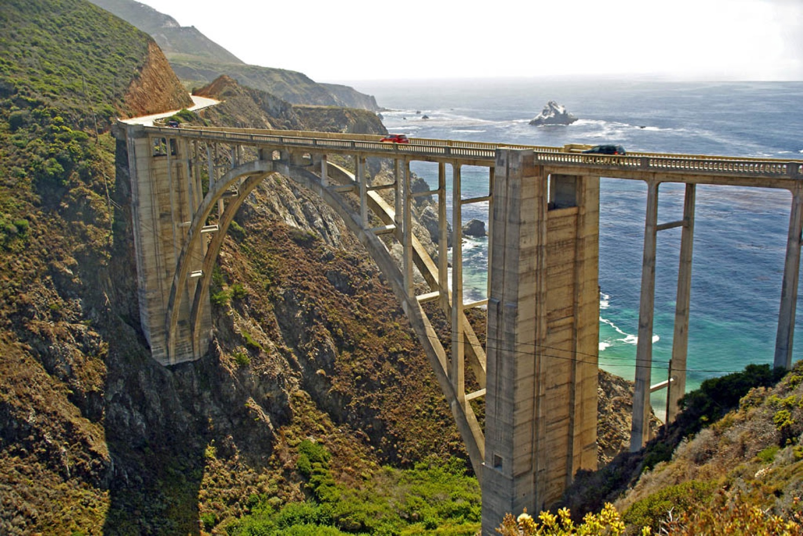
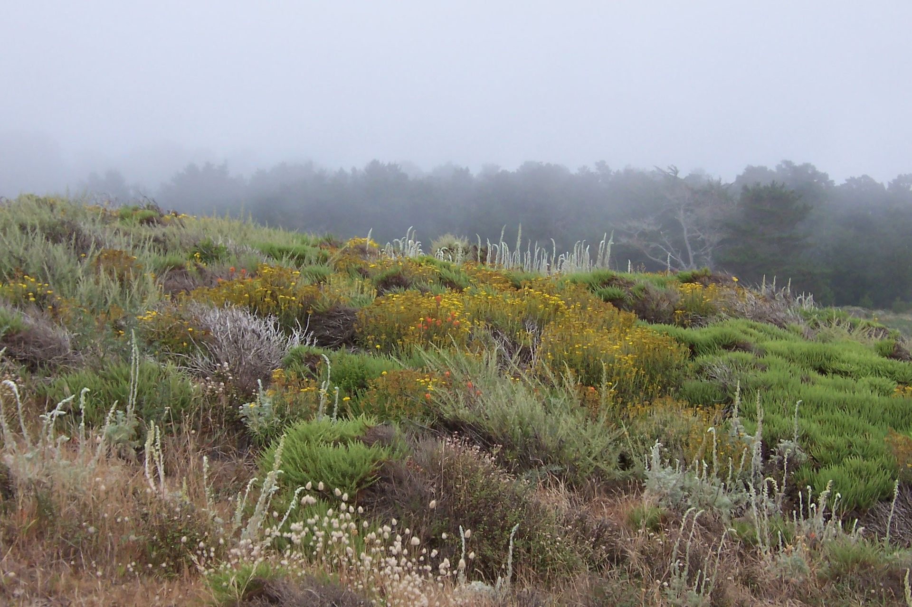
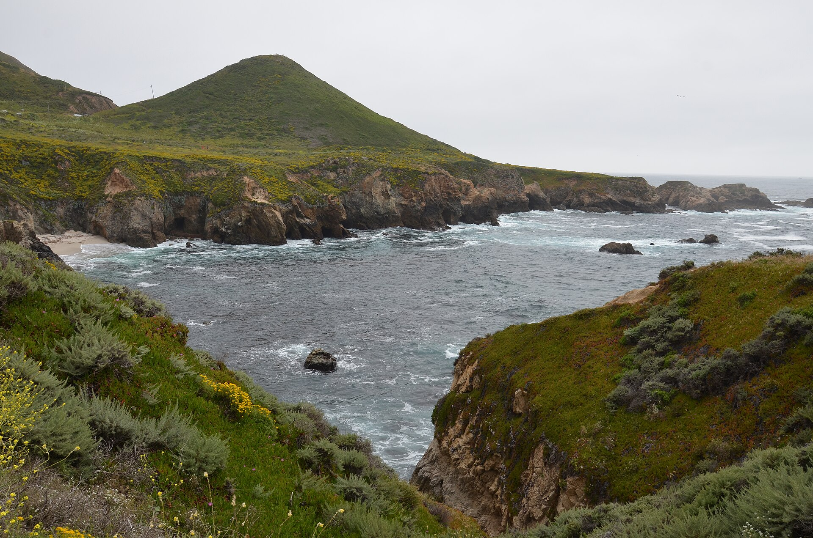
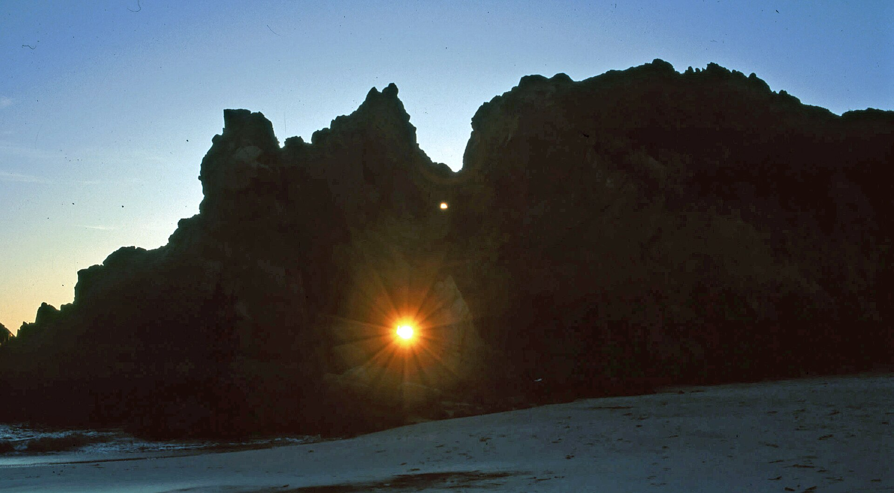
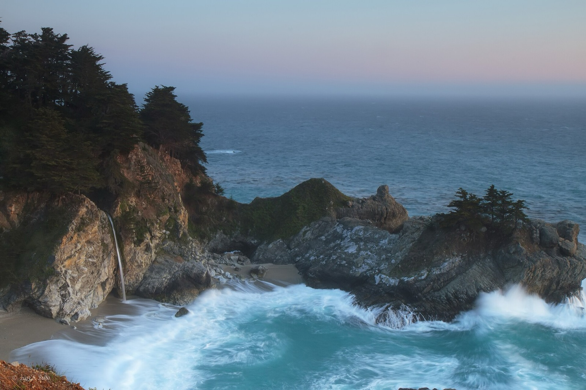
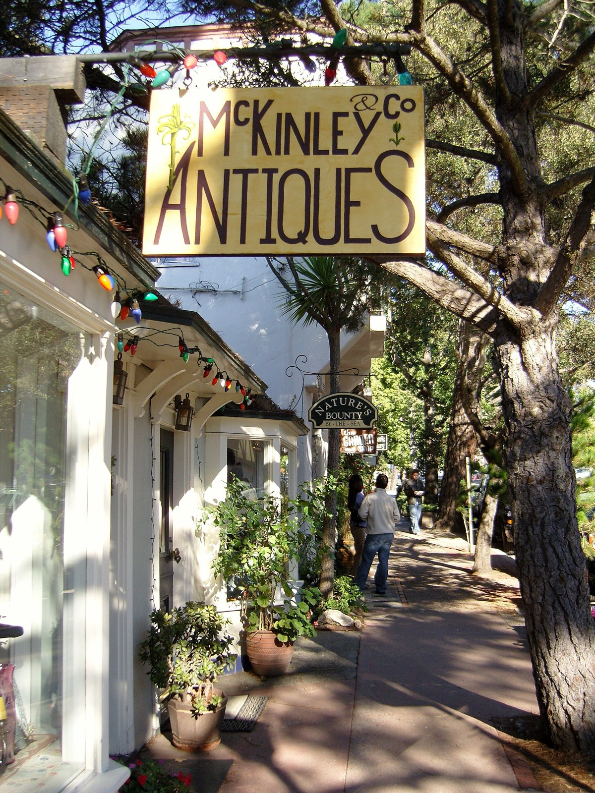
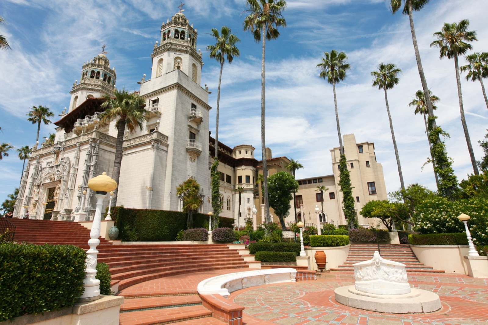
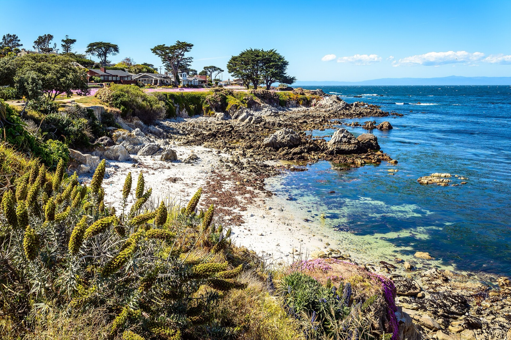

DAY 2 · 14:15

CALIFORNIA HIGHWAY 1 · INITIAL PLAN
Three days.
One wild coast.
三个人，一辆 Tesla，周三傍晚从 Santa Clara 出发。第一晚看 Lovers Point 日落，第二天把时间留给 Carmel 与 Big Sur，在 Pismo Beach 抵达这次旅行的南端。
3DAYS
≈610MILES
2HOTELS
3+1CHARGES
ROUTE OVERVIEW
南端选择 Pismo，
把时间留给风景。
第一天改为傍晚直达 Monterey，不再绕 Santa Cruz；第二天删除重复餐停和次要观景点，让 Carmel 有完整时间，再精选 Big Sur 主景点。所有时间都包含初步停车和 Car Week 交通缓冲。
沿海向南US-101 北返
NEW PACING
第一晚只做一件事
16:30 出发后不再绕 Santa Cruz。直达 Lovers Point 看日落，随后补电、吃晚饭并入住，把 Carmel 完整移到第二天。
ENERGY STRATEGY
Big Sur 前必须充足
进入 Big Sur 前目标 ≥90%。如果 Tesla 预测到达 Pismo 低于 15%，先在 Monterey 补电；出 Big Sur 后立刻在 Pismo 充电。
TRAFFIC REALITY
Monterey Car Week
8 月 12 日正值 Car Week。Pacific Grove、Carmel、Monterey 的停车与道路均留额外缓冲；付费车库优先。
CHINESE TRAVEL COMMUNITY PICKS
小红书高频候选，
但不把行程塞爆。
公开可检索的中文攻略反复提到这些地点。我们用官方页面核对后，把它们做成“替换菜单”：主计划里的 Bixby、McWay 与象海豹保留，其余只在现场时间和停车条件允许时替换。
已纳入可替换不建议硬塞





Day 2 · 必去主站
Carmel-by-the-Sea
利用 Car Week 官方 Larson Field 免费停车与接驳，停一次进入小镇；逛 Ocean Avenue、庭院、小店并完成午餐，主计划保留约 2.5 小时。
官方 Car Week 接驳 ↗
Day 3 · 保持不变
Hearst Castle
选择最适合初访者的 Grand Rooms Tour。正式导览70分钟，但连同提前报到与上下山接驳需保留约两小时；不把它硬塞到 Day 2。
官方导览详情 ↗现场决策：候选点只能“一进一出”替换原行程；不能叠加。你是全程唯一驾驶者，Tesla 电量、道路状态和你的体力优先于打卡。

01
WEDNESDAY · AUG 12
Sunset in
Monterey.
Start 16:30≈95 miNight: Salinas
START · DIRECT DRIVE
Santa Clara 出发
16:15 集合装车，Tesla 目标电量 90–100%。直接走 US-101 南下，不绕 Santa Cruz、不走 Pigeon Point；Car Week 晚高峰按 2 小时以上准备。
打开路线 ↗1h45–2h20
SUNSET STOP · 65 MIN
Lovers Point, Pacific Grove
沿 Ocean View Blvd 找合法车位，最多找位 15 分钟。留到约 19:40 看海与日落前金色光线；若 19:00 后才到，仍保留这里，但压缩为 35–40 分钟。
导航 Lovers Point ↗19:40
SUPERCHARGE · 20–25 MIN
Monterey · Del Monte Center
提前导航预热；14 个最高 250kW 充电桩，24/7。充至车机预测第二天到达 Pismo 仍有至少 15%，通常目标约 90%。
打开充电站 ↗≈90%
DINNER · WALK-IN
Alvarado Street Brewery, Monterey
三人可直接 walk-in；周三厨房营业至 22:00。停 City of Monterey garage 或 Calle Principal，21:40 左右结束，给 Car Week 排队留余量。
餐厅官网 ↗10–15 min
CHECK-IN · NIGHT 1
Courtyard Salinas Monterey
两间房，各用一张 50K 房券；现场停车 $12/车/晚。酒店没有 EV charger，所以今晚已经把第二天 Big Sur 所需电量补好。
酒店官网 ↗25–35 min
02
THURSDAY · AUG 13
Carmel first,
then Big Sur.
≈190 miCarmel: 2.5hNight: Pismo
BIG SUR ENERGY GATE
进入海岸前，Tesla 预测抵达 Pismo 必须 ≥15%
0≥90% ENTER
Big Sur 内没有可靠 Supercharger。三人、空调、逆风与爬坡都会降低实际续航；车机建议高于固定里程估算。
SLOW MORNING
起床、整理、简单垫肚子
酒店喝咖啡或吃少量早餐，把正餐留到 Carmel。水、纸巾、晕车药和外套放进座舱；10:00 退房出发。
10:00
CAR WEEK PARKING · FREE SHUTTLE
Salinas → Larson Field
导航 Carmel Mission 旁的 Larson Field。8月13日官方免费停车，接驳每10–15分钟往返 Carmel Plaza；不要开车进镇找位。
导航停车场 ↗35–50 min
MUST-SEE VILLAGE · 2H30
Carmel-by-the-Sea 小镇
从 Carmel Plaza 逛 Devendorf Park、Ocean Avenue、隐秘庭院和小店。11:30 在 La Bicyclette 午餐约60分钟，随后继续逛到13:25；不安排 Point Lobos 或 17-Mile Drive。
打开小镇中心 ↗10:55–13:25
LUNCH · RESERVE 60 MIN
La Bicyclette, Carmel
把原本第一晚的晚餐移到 Day 2 午餐；官方每日11:00–21:00，建议预约11:30，12:30前结账，避免午后 Big Sur 被拖晚。
餐厅官网与预订 ↗Carmel stop
ICON · 25 MIN
Bixby Creek Bridge
13:25 返回 Carmel Plaza 搭接驳取车，约13:50离开 Larson Field。只停合法观景位；北侧 turnout 满位就跳过，不急刹、不横穿 Highway 1。
打开地图 ↗25–35 min
ROADSIDE VIEW · 20 MIN
McWay Falls
沿途不再安排 River Inn 和 Pfeiffer Beach。只在开放的合法观景区域短停，不走任何步行路线；现场关闭则直接继续南下。
查看官方状态 ↗50–65 min
SLOW COAST DRIVE
McWay → Piedras Blancas
连续弯道与可能的单向施工。Ragged Point 不再作为正式景点；只有需要洗手间或驾驶休息时才停10分钟。
1h30±
18:05
DINNER · RESERVATION
Robin’s Restaurant, Cambria
建议预约18:30–18:45 Garden / Atrium；19:45左右离开。若 Big Sur 晚点超过30分钟，取消正餐并在 Cambria 外带。
预订官网 ↗20–25 min
SUPERCHARGE · 20–25 MIN
Pismo Beach Premium Outlets
333 5 Cities Dr · 12 枪 · 最高 250 kW · 24/7。建议充至80–85%；若酒店确认当晚能充电且车机余量充足，可直接入住。
打开充电站 ↗80–85%
CHECK-IN · NIGHT 2
Inn at the Pier Pismo Beach
Valet $30+税，包含24h in/out与先到先得的EV charging；无 self-parking。Check-out 次日12:00。
酒店官网 ↗8 min
03
FRIDAY · AUG 14
Hearst Castle,
then home.
≈285 miTour target: 12:00ETA 20:00±
breakfast
EARLY CHECK-OUT
取车并确认出发电量
10:10 退房，10:20 硬性离开。出发 SOC 目标 ≥75%；若低于65%，必须压缩早餐并在 5 Cities Dr 快充10–15分钟。
10:20
COAST DRIVE NORTH
Pismo → Hearst Castle Visitor Center
沿 US-101 / CA-1 北上，不在 Avila 或 Morro Bay 停车。车机直接导航游客中心，途中为夏季车流预留10分钟缓冲。
打开路线 ↗1h10–1h20
CHECK-IN · RESERVED TOUR
Hearst Castle Visitor Center
Grand Rooms Tour 目标预订12:00；官方要求至少提前20分钟取票。若12:00无票，可接受11:40–12:20范围，但必须按实际票面时间反推Pismo出发时间。
官方订票说明 ↗$35/adult
GUIDED TOUR · ≈100 MIN TOTAL
Grand Rooms Tour
第一次参观最合适：Casa Grande 主楼、社交大厅、剧院、花园与泳池。正式导览约70分钟，另计上下山巴士；约2/3英里步行和约140级台阶，不属于 hiking，但穿舒适鞋。
Tour 官方详情 ↗13:40
QUICK LUNCH · 35 MIN
Visitor Center 简餐
在游客中心快速吃三明治或沙拉，不再绕去 Cambria 正餐；14:20 硬性离开。
14:20
SUPERCHARGE · 20–25 MIN
Paso Robles · Golden Hill Road
经 Cambria 与 CA-46 前往 Paso；43枪、最高325kW、24/7。充至车机预测到达 Santa Clara ≥15%，通常目标约80–85%。
打开充电站 ↗1h10–1h20
RETURN · US-101 NORTH
北返 Santa Clara
约165mi；周五晚 Salinas / San Jose 可能拥堵。你是唯一驾驶者：至少安排一次15分钟休息，一旦困倦立即进入安全服务区。
19:30–20:30
ACTION BOARD
预订之后，
计划才算真正锁定。
下面全部标为待办；酒店与餐厅没有被写成“已经订好”。每项完成后可以直接在手机上勾选，状态会保存在这台设备。
立即预订
车辆与充电
装备与分工
THE RULE
现场出现封路、浓雾、疲劳或低电量预测时，依次删减：Carmel 小店 → McWay → 象海豹。Lovers Point 只在 Day 1 严重晚点时压缩；Hearst Castle 只在已有定时票且能准时报到时执行。绝不删减充电与驾驶休息。
动态信息、官方链接与照片许可 ＋
出发前重新检查
Caltrans SR-1 当前路况 ↗ · Big Sur 全线目前可通行；Rocky Creek 施工可能造成单向等待。
Julia Pfeiffer Burns State Park ↗ · 本计划仅保留 Highway 1 路边观景。
Hearst Castle 官方票务 ↗ · 先确认8月14日定时票再执行Day 3。
照片许可
图片来自 Wikimedia Commons：Joe Ravi、dconvertini、Astronautilus、Sue B / firago、U.S. Bureau of Land Management、Dietmar Rabich、Introvert、Frank Schulenburg、Stilfehler、Fred Hsu、Proimos 及 Commons 授权贡献者。完整作品与许可记录见项目 ATTRIBUTIONS。
版本说明
Revised plan · updated 05 Aug 2026。Day 1 改为16:30从Santa Clara直达Monterey，Santa Cruz已删除，Carmel移至Day 2。酒店房价、库存、道路和营业时间会变化；出发前24小时必须复查。